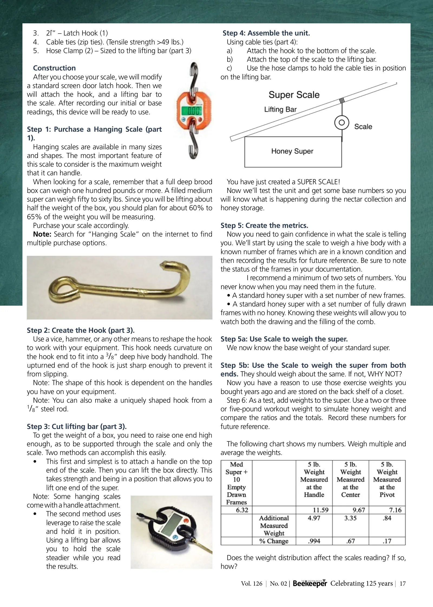

3. 2¾” – Latch Hook (1)
4. Cable ties (zip ties). (Tensile strength >49 lbs.)
5. Hose Clamp (2) – Sized to the lifting bar (part 3)
Construction
After you choose your scale, we will modify
a standard screen door latch hook. Then we
will attach the hook, and a lifting bar to
the scale. After recording our initial or base
readings, this device will be ready to use.
Step 1: Purchase a Hanging Scale (part
1).
Hanging scales are available in many sizes
and shapes. The most important feature of
this scale to consider is the maximum weight
that it can handle.
When looking for a scale, remember that a full deep brood
box can weigh one hundred pounds or more. A filled medium
super can weigh fifty to sixty lbs. Since you will be lifting about
half the weight of the box, you should plan for about 60% to
65% of the weight you will be measuring.
Purchase your scale accordingly.
Note: Search for “Hanging Scale” on the internet to find
multiple purchase options.
Step 4: Assemble the unit.
Using cable ties (part 4):
a)
Attach the hook to the bottom of the scale.
b)
Attach the top of the scale to the lifting bar.
c)
Use the hose clamps to hold the cable ties in position
on the lifting bar.
Step 2: Create the Hook (part 3).
Use a vice, hammer, or any other means to reshape the hook
to work with your equipment. This hook needs curvature on
the hook end to fit into a 3/8” deep hive body handhold. The
upturned end of the hook is just sharp enough to prevent it
from slipping.
Note: The shape of this hook is dependent on the handles
you have on your equipment.
Note: You can also make a uniquely shaped hook from a
1/8” steel rod.
Step 3: Cut lifting bar (part 3).
To get the weight of a box, you need to raise one end high
enough, as to be supported through the scale and only the
scale. Two methods can accomplish this easily.
•
This first and simplest is to attach a handle on the top
end of the scale. Then you can lift the box directly. This
takes strength and being in a position that allows you to
lift one end of the super.
Note: Some hanging scales
come with a handle attachment.
•
The second method uses
leverage to raise the scale
and hold it in position.
Using a lifting bar allows
you to hold the scale
steadier while you read
the results.
You have just created a SUPER SCALE!
Now we’ll test the unit and get some base numbers so you
will know what is happening during the nectar collection and
honey storage.
Step 5: Create the metrics.
Now you need to gain confidence in what the scale is telling
you. We’ll start by using the scale to weigh a hive body with a
known number of frames which are in a known condition and
then recording the results for future reference. Be sure to note
the status of the frames in your documentation.
I recommend a minimum of two sets of numbers. You
never know when you may need them in the future.
• A standard honey super with a set number of new frames.
• A standard honey super with a set number of fully drawn
frames with no honey. Knowing these weights will allow you to
watch both the drawing and the filling of the comb.
Step 5a: Use Scale to weigh the super.
We now know the base weight of your standard super.
Step 5b: Use the Scale to weigh the super from both
ends. They should weigh about the same. If not, WHY NOT?
Now you have a reason to use those exercise weights you
bought years ago and are stored on the back shelf of a closet.
Step 6: As a test, add weights to the super. Use a two or three
or five-pound workout weight to simulate honey weight and
compare the ratios and the totals. Record these numbers for
future reference.
The following chart shows my numbers. Weigh multiple and
average the weights.
Does the weight distribution affect the scales reading? If so,
how?
Vol. 126 | No. 02 |
Celebrating 125 years | 17